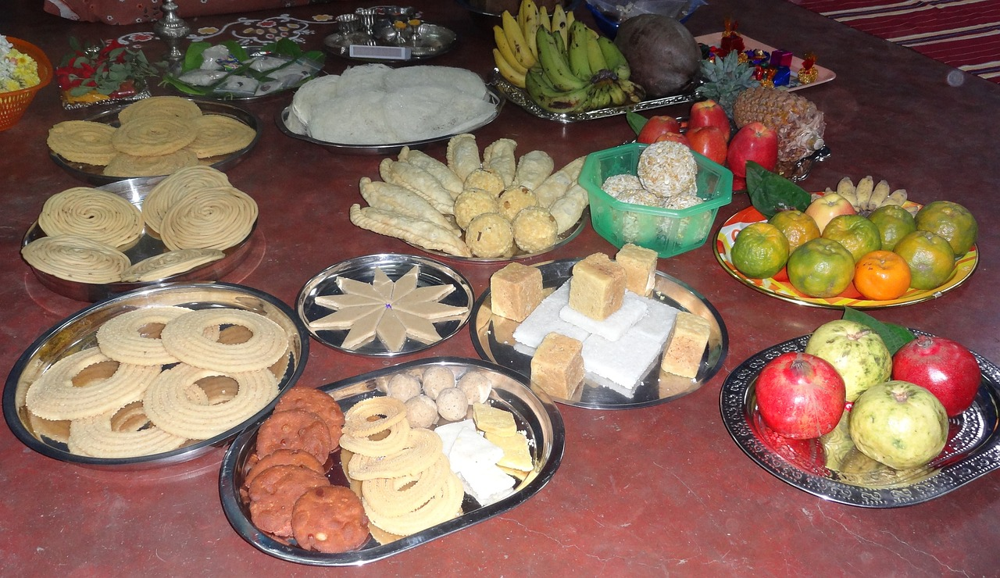

Indian Sweets

Welcome
About
Mithai (sweets) are the confectionery and desserts of the Indian subcontinent.
Thousands of dedicated shops in India, Bangladesh, Nepal, Pakistan and Sri Lanka
sell nothing but sweets.Sugarcane has been grown in the Indian subcontinent for
thousands of years, and the art of refining sugar was invented there 8000 years
ago (6000 BCE) by the Indus Valley civilisation.The English word "sugar" comes
from a Sanskrit word sharkara for refined sugar, while the word "candy" comes
from Sanskrit word khaanda for the unrefined sugar one of the simplest raw
forms of sweet.Over its long history, cuisines of the Indian subcontinent
developed a diverse array of sweets. Some[5] claim there is no other region
in the world where sweets are so varied, so numerous, or so invested with
meaning as the Indian subcontinent.In the diverse languages of the Indian
subcontinent, sweets are called by numerous names, one common name being Mithai
They include sugar, and a vast array of ingredients such as different flours,
milk, milk solids, fermented foods, root vegetables, raw and roasted seeds,
seasonal fruits, fruit pastes and dry fruits.[8] Some sweets such as kheer and
barfi are cooked, varieties like Mysore pak are roasted, some like jalebi are
fried, others like kulfi are frozen, while still others involve a creative
combination of preparation techniques.The composition and recipes of the
sweets and other ingredients vary by region. Mithai are sometimes served with a
meal, and often included as a form of greeting, celebration, religious offering,
gift giving, parties, and hospitality in the Indian subcontinent. On South Asian
festivals such as Holi, Diwali, and Raksha Bandhan sweets are homemade or purchased,
then shared.Many social gatherings, wedding ceremonies and religious festivals often
include a social celebration of food, and the flavors of sweets are an essential element of
such a celebration.
Thank you,for reading this content
This web page is created by prince: ©